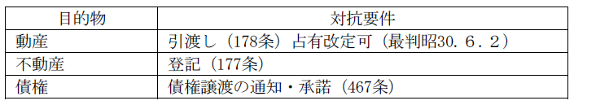
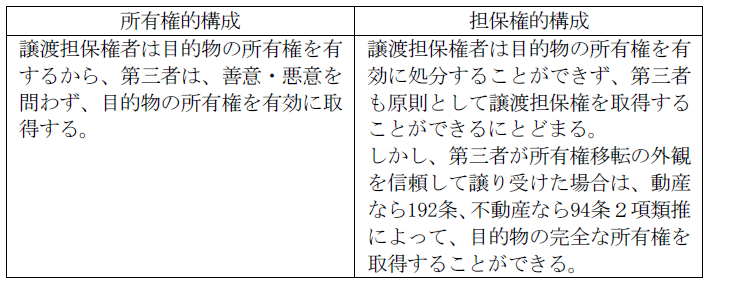
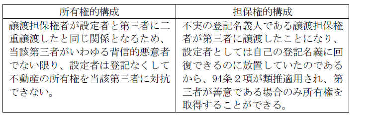
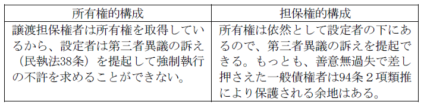
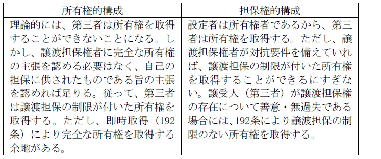
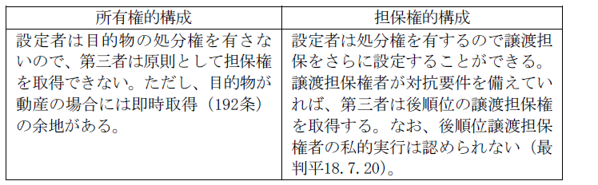

第３編 担保物権
第６章 非典型担保物権
第１節 買戻し・再売買予約
買戻しと再売買予約は、ともに主として債権担保の手段として行われ、その意味で担保物権と同様の機能を有するものということができる。
（広義）：売主がいったん売った物を対価を払って取り戻すこと
（狭義）：不動産の解除権留保売買（579条～585条）
買戻しの場合には、代金に手数料を加えた額のみを支払えば目的物を取り戻せる。金額や期間の制限が厳格である。
：売主が一度売った物を将来再び買主から売主に売り戻す旨の予約
買戻しと異なり、不動産に限られず、金額を自由に決定できる。
第２節 譲渡担保
1. 定義
：債務者又は第三者（物上保証人）に属する所有権その他の財産権を債権者に譲渡し、債務を弁済することによってその権利を受け戻すことができるとする形式の担保
2. 機能
譲渡担保の目的物は譲渡可能なものであれば足り、その占有を債権者に移転する必要はない。従って、①質権（344条）と異なり占有を設定者の下に留めたままで設定することが可能であり、また②抵当権の目的とすることができない動産その他の財貨を目的とすることができる。
さらに、債権者は競売手続などによらず、目的物の所有権を主張することで簡易・迅速に債権の回収を図ることができる。
3. 譲渡担保の法的構成
Ｑ 譲渡担保は、形式上は担保の目的である権利を債権者に移転するが、実質的には債権担保の機能を果たすにすぎない。譲渡担保の法的性格の問題は、譲渡担保の形式面を重視するか、実質面を重視するかの問題である。
Ａ 所有権的構成（大連判大13.12.24）
目的物の所有権は譲渡担保権者に完全に移転し、譲渡担保権者は設定者に対して目的物を担保目的を超えて行使してはならないという債務を負う。
Ｂ 担保権的構成（通説）
譲渡担保権者は、担保権の設定を受けたにすぎず、目的物の所有権は設定者にとどまっている。
1. 設定の当事者
設定者と担保権者との契約によって設定される。
設定者は通常債務者自身であるが、第三者（物上保証人）であってもよい。
2. 目的物
(1) 目的物
目的物には制限がなく、財産的価値のあるもので譲渡性があればよい。既に発生している債権はもちろん、将来発生すべき債権も目的物とすることができる。
譲渡担保権の目的とされていた将来債権が発生したときは、譲渡担保権者は、設定者の特段の行為を要することなく当然に、当該債権を担保の目的で取得することができる（最判平19.２.15）。
(2) 集合動産
種類、所在場所及び量的範囲を指定するなどの方法により目的物の範囲が特定される場合には、譲渡担保の目的となり得る（最判昭54.２.15）。
【特定されているか？】
・甲店舗内にある商品一切のうち設定者が保有する物 → ×
（理由）
譲渡担保権設定者所有の物という限定を付されていても、譲渡担保権設定者所有の物とそれ以外の物を明確に識別できる指標が示されておらず、区別できるような措置もない場合には、目的物の外形的、客観的な特定を欠く（（最判昭57.10.14）。
集合動産譲渡担保の設定者が、通常の営業の範囲内で譲渡担保の目的を構成する個々の動産を売却した場合には、買主である第三者は、当該動産について確定的に所有権を取得することができる（最判平18.7.20）。
3. 被担保債権
通常金銭債権であるが、それに限られない。
将来の債権であってもよく、金銭債権の場合には、増減する将来の債権のための譲渡担保の設定も認められる。
4. 対抗要件

集合動産譲渡担保権が設定され、譲渡担保権者が占有改定の方法により対抗要件を備えた場合には、その対抗要件具備の効力は、その後構成部分が変動したとしても、集合物としての同一性が損なわれない限り、新たに集合動産の構成部分となった動産を包含する集合物に及ぶ（最判昭62.11.10）。
→ 動産売買の先取特権が存在する動産が譲渡担保権の目的である集合物の構成部分となった場合においても、債権者は当該動産についても引渡しを受けたものとして譲渡担保権を主張することができ、先取特権者が先取特権に基づき動産競売の申立をしたときは、民法333条所定の第三取得者に該当することを主張することができる。
5. 即時取得
動産譲渡担保権は、動産物権の一つであるから、即時取得の対象となる（192条）。
ｅｘ．Ｘ所有のダイヤについて、無権利者ＡがＢに対して譲渡担保権を設定した
→ Ｂが占有改定以外の方法によって引渡しを受けた場合には、譲渡担保権を取得することがある。
1. 対内的効力
(1) 譲渡担保権の効力の及ぶ範囲
(a) 被担保債権の範囲
譲渡担保によって担保される債権の範囲につき、抵当権の被担保債権を制限する375条は類推適用されない（最判昭61.７.15）。
（理由）
① 375条は後順位担保権者の保護のための規定であるが、不動産譲渡担保の場合、後順位担保権者が生ずる余地はない。
② 利息等の公示方法がない。
(b) 目的物の範囲
ⅰ 付加一体物
譲渡担保は、目的物の占有・利用を設定者のもとに留めるので、担保設定後に付属させた付加一体物についても譲渡担保の効力が及ぶ（370条の類推適用）。
ⅱ 従たる権利
借地上の建物が譲渡担保の目的物とされた場合、従たる権利である賃借権にも譲渡担保の効力が及ぶ（最判昭51.９.21）。
ⅲ 物上代位
一般に肯定されている。
構成部分の変動する集合動産譲渡担保権の効力は、譲渡担保の目的である集合動産の構成部分である動産が滅失した場合にその損害をてん補するために譲渡担保権設定者に支払われる損害保険金に係る請求権に及ぶ(最決平22.12.2)。
(2) 目的物の占有・利用
占有・利用を譲渡担保権者に移転する場合と、設定者に留める場合がある。
設定者に占有・利用を留めるのが一般であるが、この際設定者の占有・利用権限をどのように説明するかは譲渡担保の法律構成により異なる。
所有権的構成からは、賃貸借ないし使用貸借契約が成立していると解することになるが、担保権的構成からは設定者に占有・利用権限があるのは当然ということになる。
＜判例＞ 最判平57.９.28
譲渡担保は、債権担保のために目的物件の所有権を移転するものであるが、所有権移転の効力は譲渡担保の目的を達するのに必要な範囲においてのみ認められるものであって、設定者は、担保権者が換価処分を完結するまでは、被担保債務を弁済して目的物件についての完全な所有権を回復することができるのであるから、正当な権限なく目的物件を占有する者があるときは、特段の事情がない限り、設定者は占有者に対してその返還を請求することができる。
(3) 譲渡担保権者及び設定者の目的物保管義務
(a) 設定者の義務
設定者は担保目的物の保管義務を負う。設定者が目的物を損傷・滅失したり第三者に即時取得させた場合には損害賠償責任を負う。損害賠償責任の内容は、担保的構成によれば譲渡担保権侵害、所有権的構成によれば所有権侵害を理由とする不法行為（709条）、又は債務不履行責任である。
(b) 譲渡担保権者の義務
担保的構成によればもちろん、所有権的構成によっても、譲渡担保権者は設定者に対して目的物を担保目的以外には利用しないという契約上の義務を負う。
(4) 優先弁済を受ける権利
譲渡担保権者が優先弁済を受けるためには、被担保債権につき債務者が履行遅滞に陥ることが必要である。
2. 対外的効力
(1) 譲渡担保権者側の第三者と設定者の関係
(a) 譲渡担保権者が目的物を第三者に譲渡した場合、当該第三者は所有権を取得できるか。

(b) 債務者が債務を弁済し、譲渡担保権が消滅した後に譲渡担保権者が目的不動産を第三者に譲渡した場合、当該第三者は所有権を取得できるか。

(c) 譲渡担保権者の一般債権者による差押え
ⅰ 不動産の譲渡担保の場合
ア．弁済期前の差押え

イ．弁済期後の差押え
弁済期後は、譲渡担保権者が目的物を処分する権能を取得し、設定者は目的物が換価されるのを受忍すべき立場にあるので、第三者異議の訴えを提起できない（最判平18.10.20）。
ⅱ 動産の譲渡担保の場合
目的物の占有は設定者の下にあるので、それを差し押さえることはあまり考えられないが、所有権的構成をとれば、譲渡担保権者の一般債権者による差押えは可能となり、担保的構成をとれば、差押えは許されないとすべきである。
(2) 設定者側の第三者と譲渡担保権者との関係
(a) 設定者が目的物を第三者に譲渡した場合、第三者は所有権を取得できるか。

(b) 設定者が目的物をさらに第三者に譲渡担保に供した場合、第三者は譲渡担保権を取得できるか。

1. 実行の方法
譲渡担保の法的構成に関するいずれの見解によっても、譲渡担保の実行とともに目的物の所有権は譲渡担保権者に帰属する。実行の方法には以下の２つがあり、いずれによるかは契約次第となる。
(1) 帰属清算型
譲渡担保権者が目的物の所有権を自己に帰属させることによって代物弁済的に債権の満足を得、目的物の評価額と債権額の差額を清算する。
(2) 処分清算型
譲渡担保権者が目的物を第三者に売却して売却代金から債権の満足を得、売却代金と債権額の差額を清算する。
2. 目的物の引渡請求権
債権者が担保権を実行するためには目的物の占有を取得することが必要である。よって、債権者は設定者に対して目的物の引渡しを請求することができる。
ただし、清算金の支払と目的物の引渡請求とは引換給付の関係にある（最判昭46.３.25）。
3. 清算
帰属清算・処分清算のいずれの実行方法によっても、目的物の価額が債権額を上回るときは、その差額を設定者に返還させるべく、清算義務が認められる。
債権者は目的物を換価処分（処分清算型の場合）又は評価額を元利金に充当し（帰属清算型の場合）、残額があればこれを債務者に返還しなければならず、不足額があればこれを債務者に請求することができる。
4. 受戻権
譲渡担保権者が「実行」によって目的物の所有権を取得しても、清算金の支払（帰属清算型）又は第三者への処分（処分清算型）があるまでは設定者は債権額を提供して所有権を取り戻すことができる。これを受戻権という。
(1) 弁済期後の債権者の処分
不動産を目的とする譲渡担保契約において、債務者が弁済期に債務の弁済をしない場合には、債権者は当該譲渡担保契約が帰属清算型であると処分清算型であるとを問わず、目的物を処分する権能を取得するので、債権者がこの権能に基づいて目的物を第三者に譲渡したときは、原則として譲受人は目的物の所有権を確定的に取得する。
この場合には、債務者は清算金がある場合に債権者に対してその支払を求めることができるにとどまり、残債務を弁済して目的物を受け戻すことはできなくなる。この結論は譲受人たる第三者が背信的悪意者であっても異ならない（最判平６.２.22）。
(2) 受戻権の放棄と清算金
譲渡担保権の設定者は、譲渡担保の目的物についての受戻権を放棄しても、譲渡担保権者に対して清算金の支払を請求することはできない（最判平8.11.22）。
※＜判例＞ 最判平11.２.26
譲渡担保権者から目的不動産を譲り受けた第三者と譲渡担保権設定者の精算金支払請求権の消滅時効の援用
・判旨
「譲渡担保権者から被担保債権の弁済期後に譲渡担保権の目的物を譲り受けた第三者は、譲渡担保権設定者が譲渡担保権者に対して有する清算金支払請求権につき、消滅時効を援用することができるものと解するのが相当である。」
第３節 代理受領
：例えば債務者Ｂが第三債務者Ｃに対して有する債権について、Ｂの債権者ＡがＢからその債権の取立てないし受領の委任を受け、ＡがＣから受領した金銭をＢに対する債権に充当するという債権の担保方法
1. 対内的効力
(1) 直接取立権の有無
ＡがＣから直接に取立てる権利を有するか。
ＡＢ間に取立委任がされていれば直接取立権があり、Ｃの承諾はＣへの対抗要件となるに留まる（467条１項類推）。しかし、受領委任にすぎなければ直接取立権はない。
(2) 義務違反の効果
ＣがＢに弁済した場合、ＡはＣにいかなる請求をすることができるか。
Ｑ Ｂへの弁済を安易に認めた場合、代理受領の担保としての意味は半減するため問題となる。
Ａ 取立委任型
Ｃは債務の消滅をＡに主張できず、Ａは依然としてＣに取立権を行使することができる。
Ｂ 受領委任型
Ｃの行為に対して不法行為責任を追及することができる（Ｃが承認したことでＡ以外には弁済しないという不作為義務を負いその義務違反とした事例につき、最判昭44.３.４）。
2. 対外的効力－第三者に対する効力
代理受領権につき、第三者への対抗要件の方法がないため、第三者に優先的地位を主張できない。